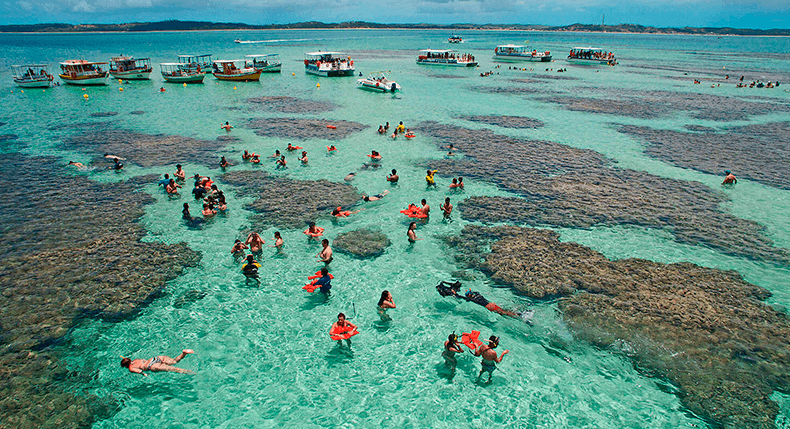

Bonito
Bonito is a town and ecotourism hub in southern Brazil's Mato Grosso do Sul state. The surrounding area is known for crystal-clear rivers such as the Rio da Prata, a snorkeling destination abounding with fish. The Abismo Anhumas is a huge, stalactite-covered cavern that offers abseiling and diving in an underground lake. Flocks of macaws nest in the deep, ocher-colored depression Buraco das Araras.
Fernando de Noronha
Fernando de Noronha is a volcanic archipelago about 350 kilometers off Brazil's northeast coast. It’s named after its largest island, a protected national marine park and ecological sanctuary with a jagged coastline and diverse ecosystems. It's renowned for its undeveloped beaches, and for scuba diving and snorkeling. Sea turtles, rays, dolphins and reef sharks swim in its warm, clear waters.

Manaus
Manaus, on the banks of the Negro River in northwestern Brazil, is the capital of the vast state of Amazonas. It's a major departure point for the surrounding Amazon Rainforest. Just east of the city, the dark Negro River converges with the brown, muddy Solimões River resulting in a striking visual phenomenon called the “Meeting of the Waters.” The combined tributaries form the Amazon River.

Salvador
Salvador, the capital of Brazil’s northeastern state of Bahia, is known for its Portuguese colonial architecture, Afro-Brazilian culture and a tropical coastline. The Pelourinho neighborhood is its historic heart, with cobblestone alleys opening onto large squares, colorful buildings and baroque churches such as São Francisco, featuring gilt woodwork..
Maragogi
Maragogi is a resort town on the Atlantic coast in eastern Brazil. It’s known for its long beaches such as Burgalhau, near the mangrove-lined Dos Paus River. Offshore coral reefs and sandbars have created a shallow lagoon, which acts as a natural pool. South of Maragogi is São Bento, a fishing village with a palm-edged beach. The coast here is part of the Coral Coast protected area, which is rich in flora and fauna.
Natal
Natal is the capital city of the state of Rio Grande do Norte, on Brazil's northeastern tip. It's known for its extensive coastal sand dunes and star-shaped Forte dos Reis Magos, a 16th-century Portuguese fortress at the mouth of the Potengi River. North across the river, Genipabu is an area of towering dunes with a freshwater lagoon. The Via Costeira highway links a 15km stretch of beaches south of the fort.